正文、大纲、人物、设定、灵感一站式管理。
输入即存，永不丢稿 —— 所有数据留在本机。
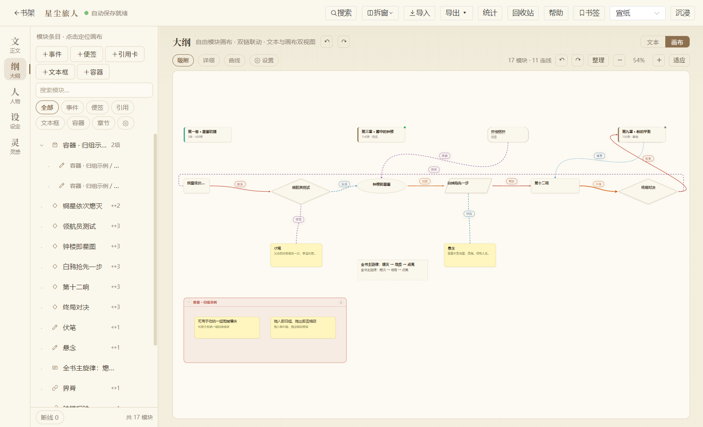
docs/开发流程.md（工程方法）· docs/使用手册.md（操作说明）· CHANGELOG.md（版本历史）
小说工坊把「正文 / 大纲 / 人物 / 设定 / 灵感」收进同一个工作台， 并以输入即存作为第一原则：输入防抖 1 秒落盘、30 秒兜底、 失焦与切章与关窗前强制保存，配合章节自动版本快照，尽力让每一句话都不丢。 所有数据存于本机，不联网、不上传、不登录。
它要解决的是长篇小说创作中最常见的三个断裂：
| 创作痛点 | 小说工坊的做法 |
|---|---|
| 结构散失 正文与大/小纲分离 |
大纲做成自由模块画布——事件、便签、引用卡自由摆位，用四类语义连线表达因果伏笔；正文可拆窗与大纲并排对照。 |
| 资料割裂 人物关系与设定散落多处 |
人物有关系图可视化，设定是无限嵌套的幕布树，两者都能与正文通过 [[双链]] 互相引用、悬停预览。 |
| 心血丢失 版本混乱、误删难恢复 |
自动落盘 + 章节版本快照可回滚；删除进入回收站可恢复；支持整库 JSON 备份与还原（含图片）。 |
入口是书架页：每部作品一张封面卡，显示书名、总字数、章节数与创作状态（构思 / 连载 / 完结）。 卡片右上角是编辑与删除（软删除，可回收站恢复）菜单。 顶栏常驻备份、恢复、统计与帮助入口，右上角「＋ 新建作品」一键开书。
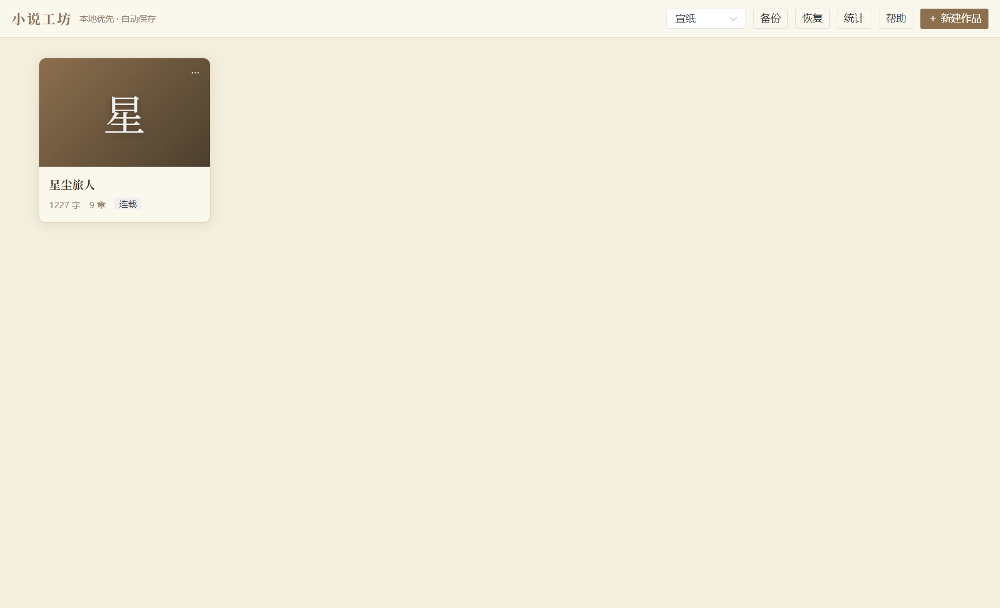
导出 JSON 全库快照（含图片 base64），可整体还原；跨设备迁移或换机重装都靠它。
命令行加 --profile=名字 即使用独立数据目录，多开互不干扰，写作与试稿可分开存放。
左侧是卷—章两级树：支持拖拽排序与按钮上下移动，行内显示每章字数， 顶部提供 ＋卷 / ＋章 / 改名 / 删除 一组快捷操作。 中间是富文本编辑区，右侧「本章大纲 / 本章出场人物 / 本章插图 / 本章信息」随当前章节实时联动。
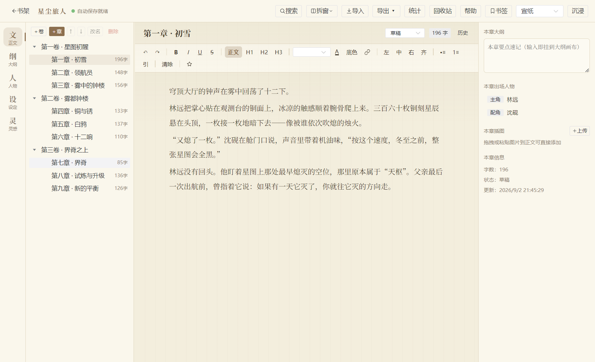
加粗 / 斜体 / 下划线 / 删除线，正文与 H1–H3 标题，字号、字体颜色、突出显示，超链接， 左中右两端对齐，有序与无序列表、引用，撤销重做与清除格式。
每章可标记草稿 / 完成 / 待修改；书签三入口——侧栏右键、工具栏 ☆ 键、顶栏 🔖 下拉跳转。
在正文中右键会就地弹出快捷操作栏，把最常用的编辑动作一次摊开， 免去来回移动鼠标到工具栏。含二级飞出菜单（标题 / 字号 / 字体颜色 / 突出显示 / 对齐）， 以及「添加双链…」——把选中文字直接链到任意章节、人物或设定。
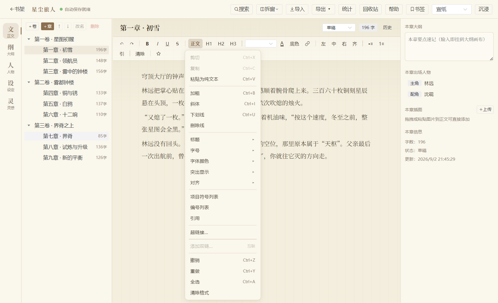
事件（矩形 / 菱形 / 平行四边形 / 椭圆，SVG 真实描边）、 便签、引用卡（双链到设定 / 章节 / 人物）、 文本框（透明度可调）、容器（拖入归组 / 拖出回根级 / 可折叠）、 章节与卷锚点（点击跳回正文对应位置）。
拖拽摆位（网格吸附、双密度切换、pin 固定、八向调整尺寸），双击行内编辑， 空白处右键新建，Delete 删除选中模块。侧栏点击定位、双向高亮。
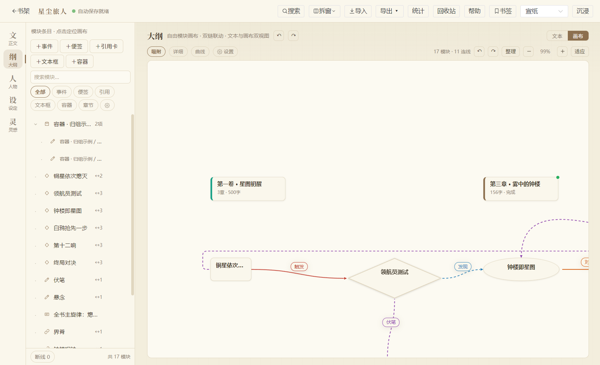
| 语义 | 默认色 | 说明 |
|---|---|---|
| 关联 | 蓝 | 常规关系，默认线型 |
| 因果 | 红 | 事件之间的推动关系 |
| 伏笔 | 紫 | 默认虚线，用于铺垫与回收 |
| 冲突 | 橙 | 对抗与张力 |
除了「模块 ↔ 模块」，还支持连线与连线互连：从模块锚点拖线， 若落点在既有连线上（12px 容差命中），会在落点自动创建一个连接点并完成接线。 连接点采用「连线寄生」模型——以路径参数挂在宿主连线上，节点怎么挪都钉在线上不脱线； 一条连线可建多个连接点、各自引出多条线。
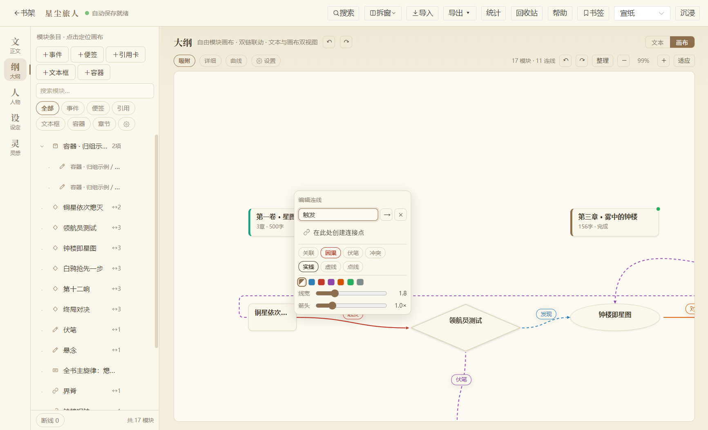
左键按住连线拖动，连线随鼠标弯曲；拖回接近直线（垂距 < 6px）自动拉直，或双击直接拉直恢复自动路由。
编辑浮层按上 / 下 / 左 / 右四方位自动避开连线本体落位，不遮住正在修改的那条线。
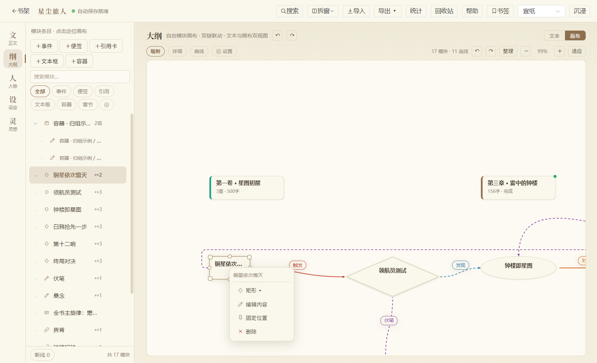
形状（矩形 → 平行四边形 → 菱形 → 椭圆 循环切换）、编辑内容、透明度滑杆（文本框）、 自定义类型、固定 / 取消固定、删除（红标）。容器另有七色调色板。
吸附开关、双密度、贝塞尔 / 正交折线切换、全局线宽与箭头大小设置、 缩放（− / 百分比 / ＋）、适应视口、一键整理布局。
画布之外还有文本视图——把同一份大纲数据以缩进树呈现，适合快速罗列与调整层级。 两个视图共享同一份数据，右上角一键切换，改动即时互通。
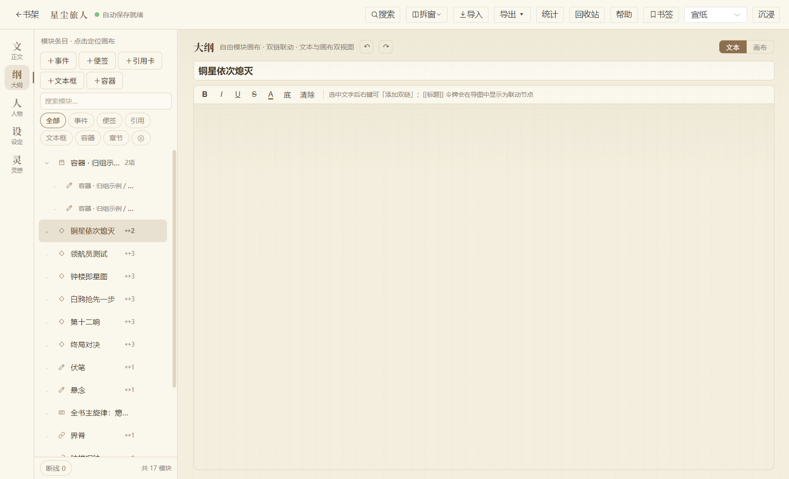
画布与文本不是两套数据，改一处另一处立即同步。
文本视图显示节点所属容器，归组结构不会在文字里迷路。
容器从属缩进、折叠状态与画布同步，支持搜索筛选定位。
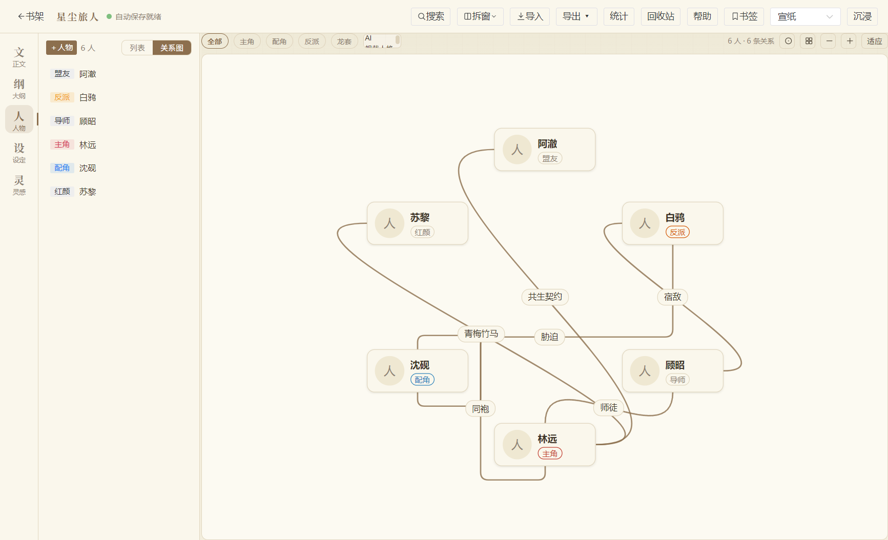
在画布上从人物拖线到另一人即建立关系；拖线落到已有关系上则打开该关系的编辑浮层，就地改标签或删除。
圆形 / 网格一键排布；悬停节点高亮一度关系网；按角色或标签筛选；孤岛人物单独提示，避免「写了却没用上」的角色。
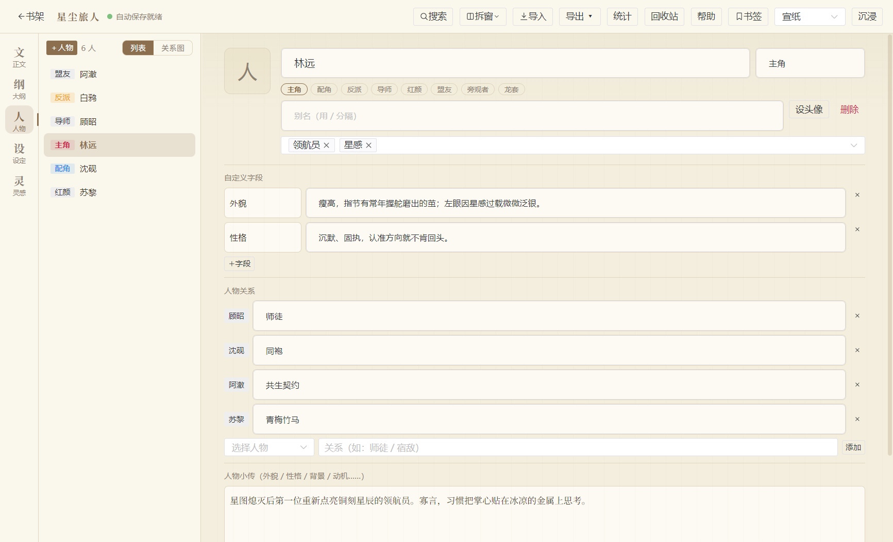
| 字段 | 说明 |
|---|---|
| 角色定位 | 8 个常见定位快捷胶囊（主角 / 配角 / 反派 / 导师 / 红颜 / 盟友 / 旁观者 / 龙套），也可完全自定义输入 |
| 标签 | 自由打标签（如「皇族」「魔教」），可用于关系图筛选 |
| 自定义字段 | 默认预置「外貌 / 性格」，可任意增删字段名与内容 |
| 别名 · 头像 · 小传 | 别名用 / 分隔；头像上传后同步显示在关系图节点；小传支持富文本与格式 |
| 人物关系 | 在卡片内直接添加与其他人物的关系，与关系图双向同步 |
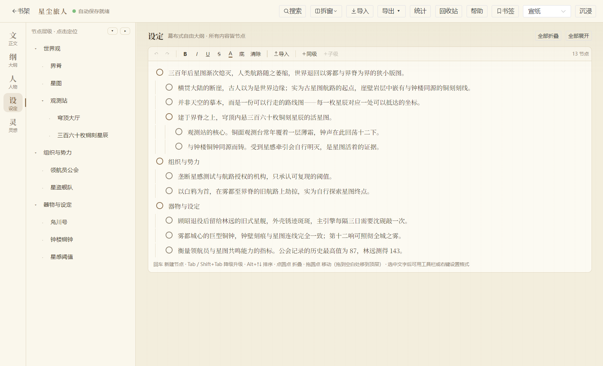
没有「文件夹 / 条目」二分，任意节点地位平等。拖拽移动带三区插入指示，悬停折叠节点自动展开， 拖到空白处即移到顶层，配 FLIP 衔接动画。
节点内容支持加粗 / 斜体 / 下划线 / 删除线 / 颜色 / 底色 / 清除格式， 带快照式撤销重做，以及节点级复制 / 剪切 / 粘贴（纯文本优先）。
灵感是一张随时可用的纸条：在输入框记下一句话，Ctrl+Enter 提交， 列表按时间倒序排列。任何一条灵感都能一键转为章节或设定， 从「想到」到「落在结构里」只差一次点击。
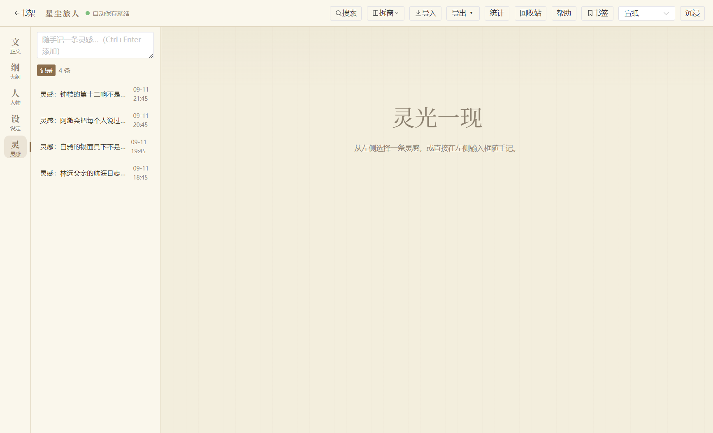
不打断正文写作，占用一个侧栏位置即可记录。
灵感直接变成章节节点，省去复制粘贴。
世界观构想转为幕布节点，即刻进入设定树。
[[双链]]——写「钟楼的第十二响」时把关键词链到设定节点，
日后检索与追溯都能回到源头。
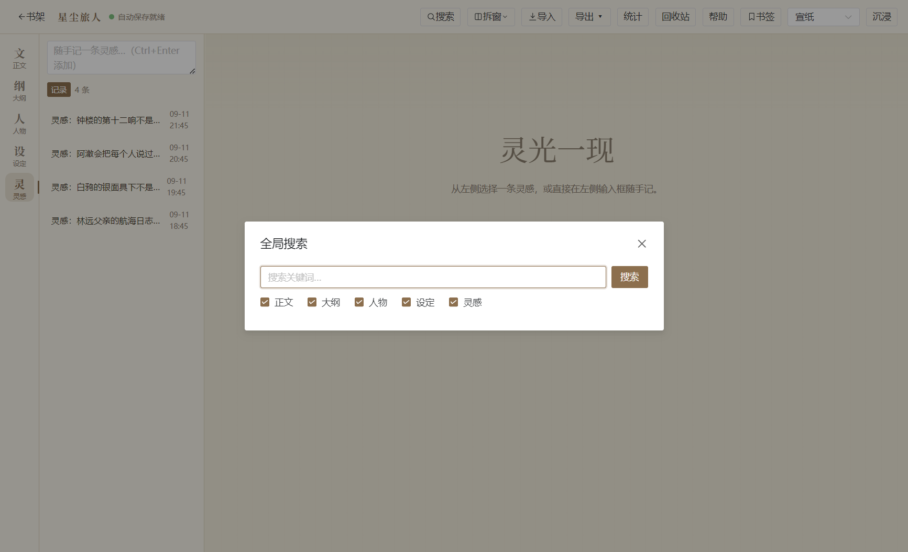
Ctrl+Shift+F 唤出，跨 正文 / 大纲 / 人物 / 设定 / 灵感五个模块检索， 结果按模块分组并高亮命中片段，点击直接跳到对应位置。
任意位置选中文字 → 右键「添加双链…」，或手输 [[标题]]，
把章节、人物、设定互相引用；悬停链接即可预览目标内容；
改名不断链（富文本区按 id 存储），并支持反向链接查询与引用统计。
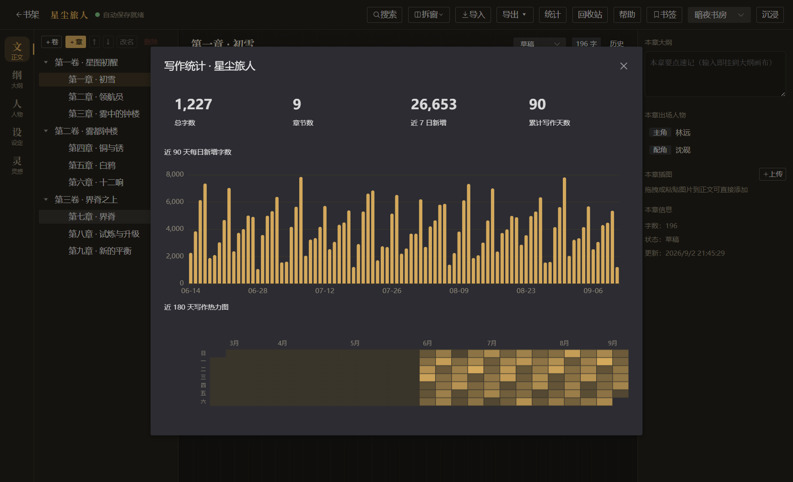
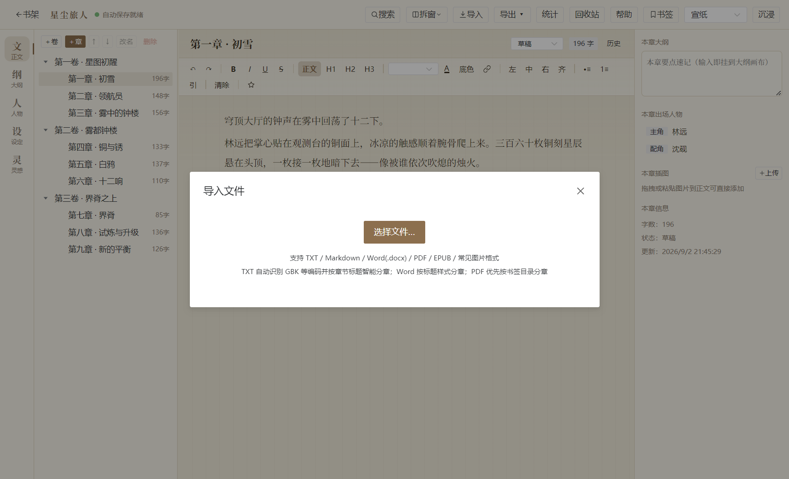
| 格式 | 处理方式 |
|---|---|
| TXT | 自动识别 GBK 等编码，按「第 X 章」智能分章 |
| Markdown | 标题层级映射为卷 / 章结构 |
| DOCX | 按 Word 标题样式分章，经 mammoth 解析为富文本 |
| 优先按书签目录分章；扫描件可整页转存图片 | |
| EPUB | 按目录结构分章导入 |
| 图片 | 作为章节插图导入，可在右栏「本章插图」管理 |
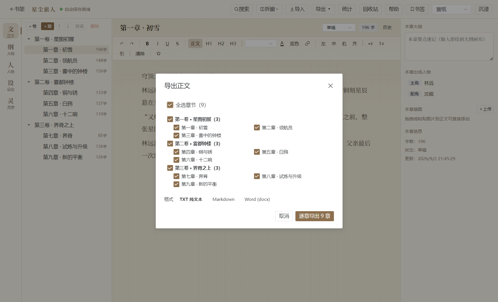
| 选中范围 | 导出行为 |
|---|---|
| 1 章 | 直接以 章节名.格式 导出 |
| 多章（≤ 阈值，默认 30） | 逐章分批：仅首次确认位置，之后自动写入同目录，每章一个文件；首步取消即中止 |
| 超过阈值 | 可选「合并为单个文件」或「按章打包 zip」（按卷分目录、序号-章节名 命名） |
顶栏「⧉ 拆窗 ▾」可把正文 / 大纲 / 人物 / 设定 / 灵感任一模块 拆出为完整功能界面的独立窗口（侧栏 + 编辑区 + 调宽手柄）， 面板内可自由切换条目——它是完整的第二编辑现场。
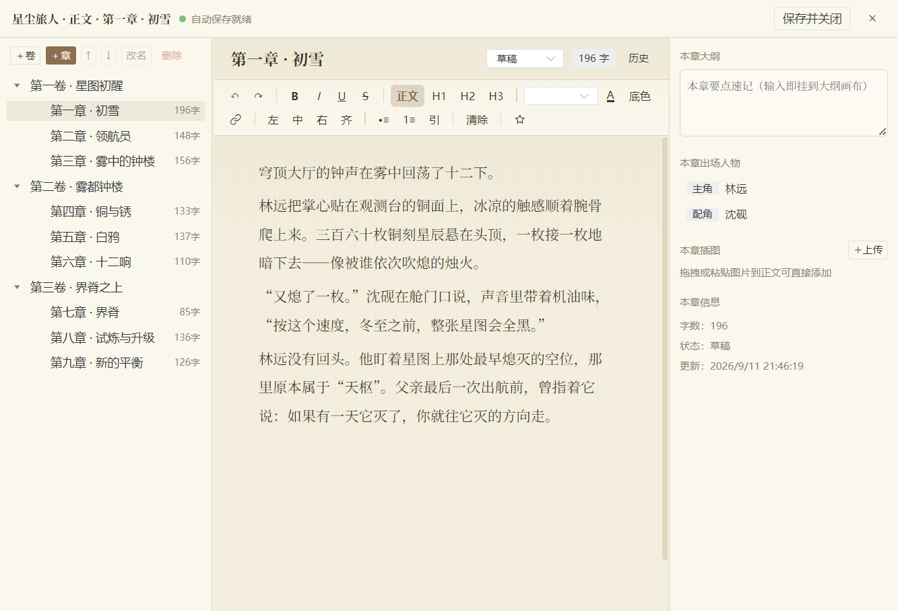
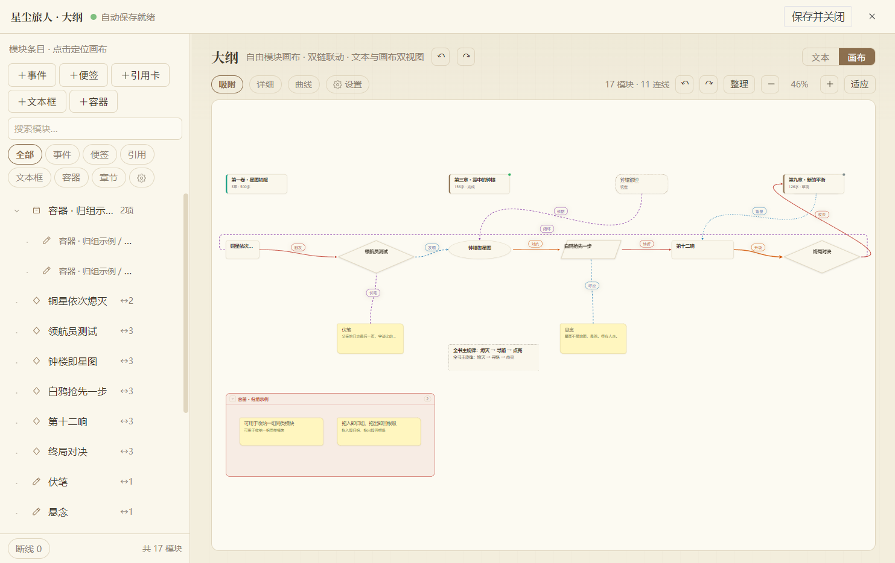
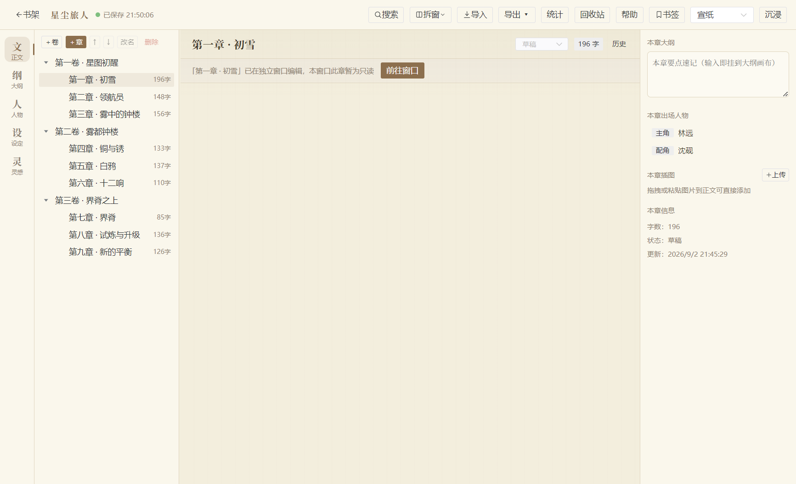
为防同一内容被两个窗口同时改写，软件内置实体锁： 面板占用的章节，主窗口该章转为只读占位并给出「前往窗口」按钮， 其余章节照常可写。面板内切换条目时，锁随选中自动迁移。
章节 / 人物 / 灵感用条目级锁（只有被占用的那条转只读）； 大纲 / 设定幕布是跨节点树编辑，用模块级锁（对应页签整体占位）—— 避免「锁了半个模块」的假安全。
面板按类型记忆窗口几何（并夹取到可见屏内）；关闭前优雅保存； 主窗口关闭时级联关闭全部面板。
提供宣纸（默认，暖米色纸纹）、羊皮纸、暗夜书房（深色）三套皮肤。
全局采用衬线排版与纸张纹理，配统一的图标体系与视觉令牌（圆角 / 间距 / 投影 / 动效时长），
并支持 prefers-reduced-motion 降级与键盘焦点环。
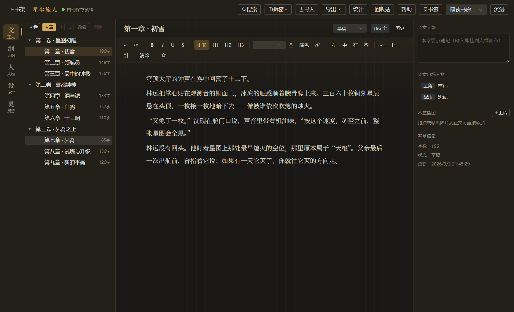
暖米色纸纹底色，默认主题，长时间阅读最柔和。
偏暖黄的旧纸质感，适合偏好复古阅读感的作者。
深色低亮配色，夜间写作减少屏幕刺激。
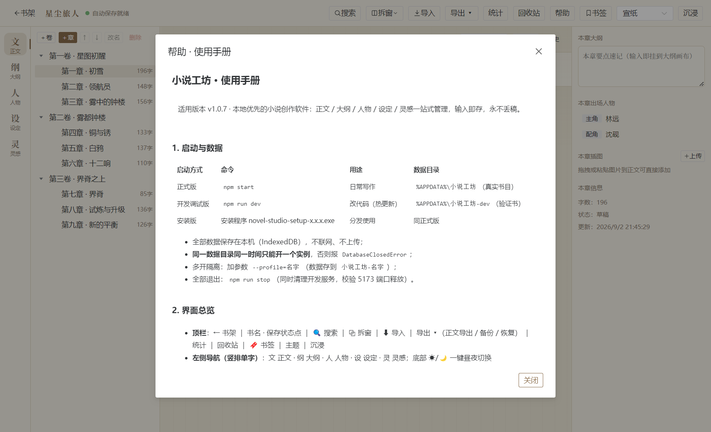
顶栏「帮助」按钮（书架页与书内均有）打开内置手册。手册以 Markdown 原文打包进构建、
marked 实时渲染，与源码手册同源——功能一变，手册跟着变，永不失同步。
删除的章节 / 人物 / 设定 / 灵感进入回收站，按类型分页，可恢复或彻底删除。
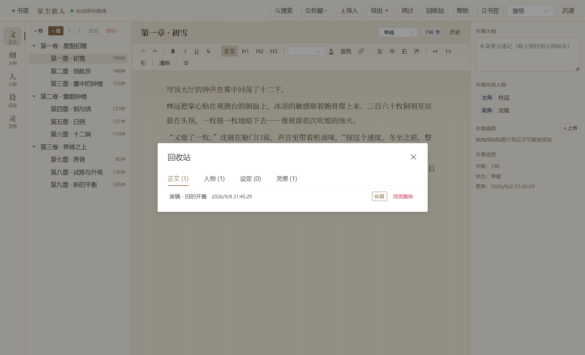
| 形态 | 获取方式 | 说明 |
|---|---|---|
| 安装程序 | novel-studio-setup-1.0.18.exe来自 GitHub Releases |
Windows x64，NSIS 向导式（可选安装路径、创建桌面与开始菜单快捷方式） |
| 免安装本体 | release2/win-unpacked/小说工坊.exe |
双击直接运行，无需安装 |
| 源码运行 | npm install && npm start |
开发者方式，需 Node.js ≥ 18 |
%APPDATA%\小说工坊，卸载不影响作品数据。
| 形态 | Windows 桌面应用（Electron），本地优先、离线可用 |
| 前端 | Electron 33 + Vue 3 + Pinia + Naive UI |
| 编辑器 | TipTap 富文本（正文）· 自研幕布编辑器（设定 / 大纲文本）· 自研画布引擎（大纲 / 人物关系图） |
| 存储 | Dexie / IndexedDB，Repository 层隔离（后续可平滑迁移 SQLite） |
| 图表 | ECharts |
| 打包 | electron-builder（NSIS 安装程序 + 免安装目录，maximum 压缩） |
| 规模 | 51 个源码文件（31 个 Vue 组件）· 约 1.54 万行源码 |
| 质量 | 17 套端到端验收脚本 · 179 项断言，随版本入库 |